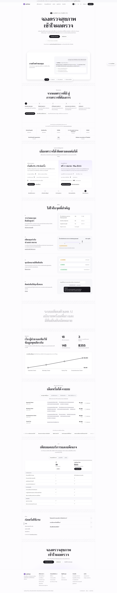
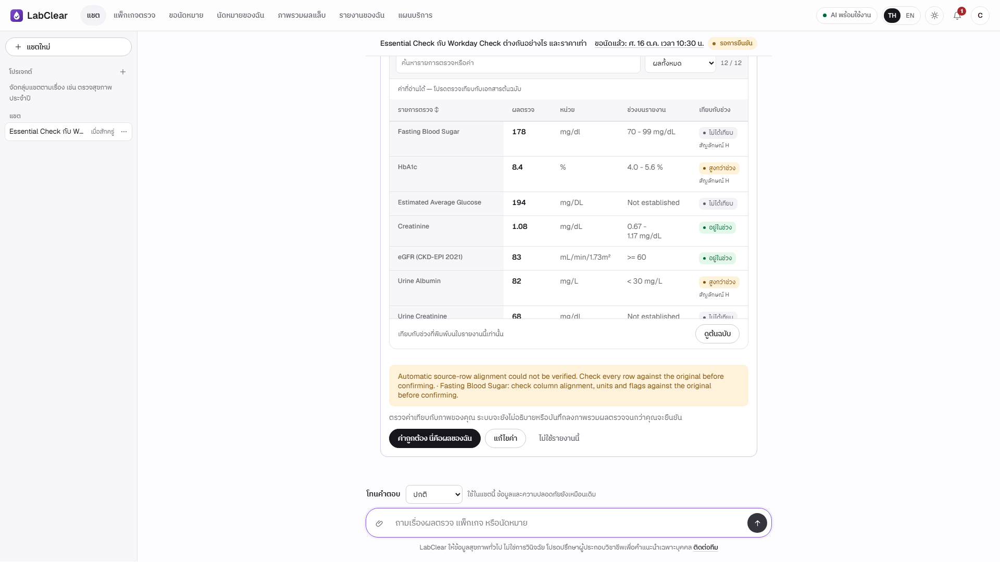

Project Overview
 LabClear
LabClearผู้ช่วยข้อมูลบริการตรวจสุขภาพ
และทบทวนค่าบนรายงานผลตรวจ
ตอบคำถาม เปรียบเทียบบริการ จัดคำขอนัดหมาย และทบทวนค่าบนรายงานหลังผู้ใช้ตรวจยืนยัน พร้อมแสดงแหล่งข้อมูลและขั้นตอนประมวลผล
01
Business
โจทย์และขอบเขตบริการ
02
Knowledge
ข้อมูลที่ใช้ตอบและแหล่งอ้างอิง
03
Functions
สิ่งที่ผู้ใช้และเจ้าหน้าที่ทำได้
04
Architecture
องค์ประกอบและขั้นตอนประมวลผล
05
Evaluation
ผลทดสอบและสิ่งที่ต้องพัฒนาต่อ

ภาพหน้าแรกไม่พร้อม
Core Functions
Report Review · Sources & Explainability
ค่าบนรายงานต้องผ่านการตรวจของผู้ใช้ ถ้าไม่ผ่าน ระบบแจ้งเหตุแทนการแสดงคำอธิบาย
03
Report Review
อ่านภาพ / PDF→ตรวจ / แก้ค่า→ยืนยัน→แสดงข้อมูลที่ผ่าน/แจ้งเหตุ
ระบบเตือนให้ตรวจทุกแถวเทียบต้นฉบับ และยังไม่อธิบายจนกว่าผู้ใช้จะยืนยัน · รอบที่บันทึกนี้ระบบไม่แสดงคำอธิบายเพราะไม่ผ่านการตรวจ

ภาพหลักฐาน S05 ไม่พร้อม
+
Sources & Process Explainability
คำตอบที่เสร็จสมบูรณ์เปิดดูแหล่งอ้างอิงและขั้นตอนที่เกิดขึ้นจริงได้ ทั้งการตรวจความปลอดภัย แผน เครื่องมือ และเวลา
trace เป็นข้อมูลขั้นตอนที่ระบบบันทึก ไม่ใช่กระบวนการคิดภายในของโมเดล

ภาพหลักฐาน S04 ไม่พร้อม